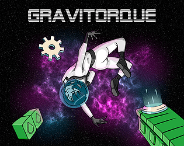
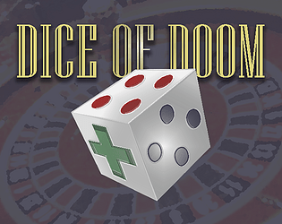
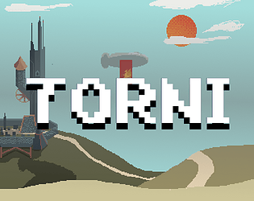
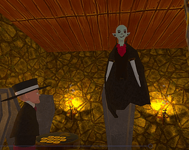

My projects

Gravitorque
Solve challenging problems and collect cogs in this gravitational puzzle platformer!

Dice Of Doom
Play as the Dice Of Doom in this unique casino-themed roguelike

TORNI
A physics based puzzle-platformer where you help two robots climb a tower

Blood and Bones
Cross-platform VR game for two players!